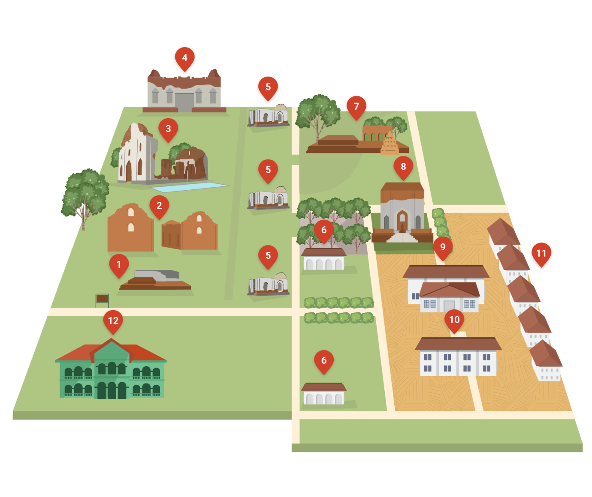

แผนที่พระนารายณ์ราชนิเวศ

1.อ่างเก็บน้ำ The water tank
2.สิบสองท้องพระคลัง The Twelve Royal Storage Buildings
3.ตึกเลี้ยงรับรองแขกเมือง The Reception Hall for foreign vistors
4.ตึกพระเจ้าเหา Phra Chao Hao Hall
5.โรงข้างหลวง Elephant Stables
6.หมู่ตึกทิมดาบ Thim Dap Bulidngs
8.พระที่นั่งดุสิตสวรรค์ ธัญญมหาปราสาท Dusitsawan Thanya Masapreasada Throne Hall
9.หมู่พระที่นั่งพิมานมงกุฎ piman mongkut pavilion
10.พระที่นั่งจันทรพิศาส Chanthara Phisan Throne Hall
11.หมู่ตึกพระประเทียบ Phra Pratap Buildings
12.สำนักงาน Office